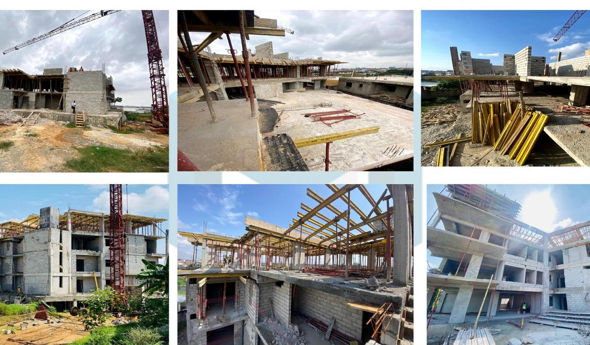
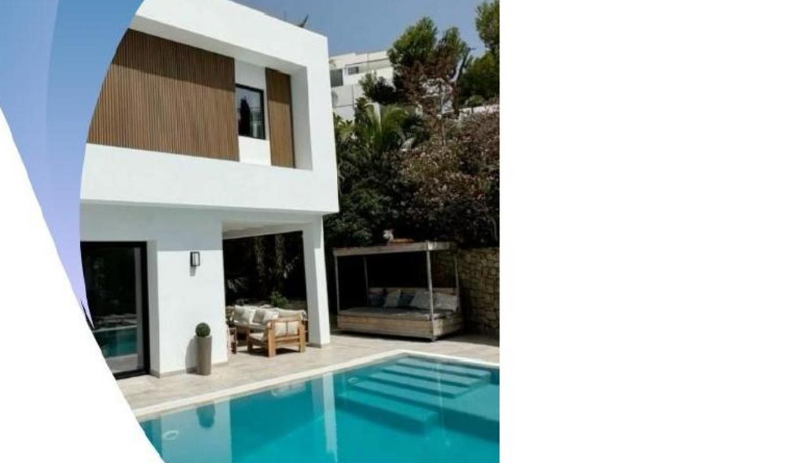
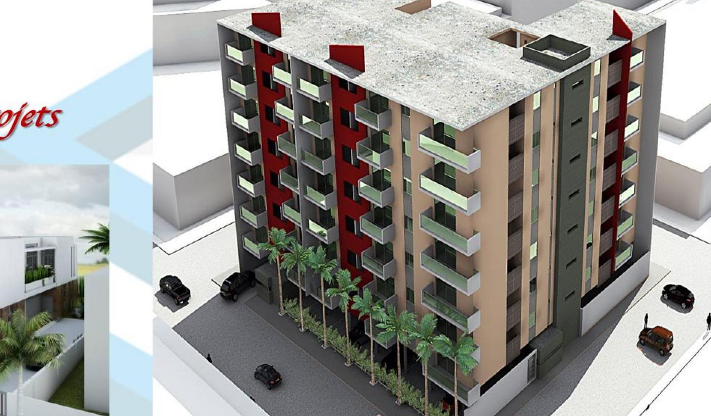
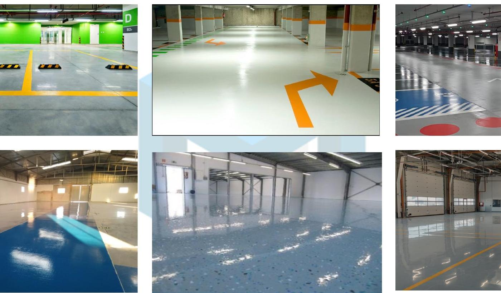

Operations that illustrated our ability to serve multiple project types, client profiles and levels of standing.
We structured our portfolio so you can identify the operating context closest to your own project more quickly.
Our base is in Cote d'Ivoire, with sub-regional references that confirmed our delivery capacity beyond Abidjan alone.
Portfolio by expertise
Choose the portfolio track closest to your project.
We organized this portfolio by expertise so you can identify, at a glance, the references that are closest to your context, your intended use and your level of requirement.
New-build
Premium residential developments, villas and buildings with high execution expectations.
We supported project owners and investors who needed structured execution, readable coordination and a final quality level aligned with the intended standing.

High-end R+2 building with basement
In Riviera Golf 4, we intervened on a defining reference that confirmed our ability to steer a premium residential program where structure, finishing trades and final perception had to remain aligned.
Program
High-end residential project with strong image ambition
Scope
Project reading, execution coordination and final quality control
Client challenge
Deliver an asset that felt credible in use, finish level and perceived value
- Premium-zone operation with high expectations on visible quality and interface control.
- Trade coordination and handover logic were structured to limit late-stage rework.
- This reference positioned JERU on clearer and more ambitious new-build operations.

Duplex villa construction
In Riviera Palmeraie, we confirmed our know-how on a residential typology where finish level, spatial clarity and user comfort were directly expected.
- Relevant typology for premium residential clients and asset-focused investors.
- Clear reading of facade, layout and finishing expectations from the outset.
What this project confirmed: our ability to support residential assets with strong expectations on perceived quality.

R+6 building construction
In Riviera M'Badon, we confirmed our ability to intervene on more ambitious vertical operations, with stronger needs in phasing, coordination and execution control.
- Useful reference for clients seeking reassurance on denser and more technical operations.
- It confirmed JERU's ability to intervene on larger and more ambitious developments.
Related references: Cocody Beverly and the construction of two semi-detached villas also reinforced this position in premium residential work.
Rehabilitation & repositioning
Taking over an existing asset, bringing it back to standard and relaunching its use value.
We supported owners, investors and operators who needed to upgrade an existing property without starting from zero, with a clear reading of what had to be preserved, corrected or modernized.

Triplex rehabilitation and renovation
In Ouagadougou, we demonstrated our ability to manage a deep asset recovery mission with diagnostic logic, priority ranking and return-to-use planning beyond the Abidjan market alone.
Mission type
Existing asset takeover, renovation and repositioning
Sensitive point
Arbitrating what had to be kept, rebuilt, modernized or reconfigured
Expected result
A relaunched asset with stronger perception and better usability
- High-value reference because it proved a recovery capacity beyond the immediate local market.
- Technical and commercial reading of the asset were conducted in parallel.
- It confirmed JERU's ability to relaunch asset value, not only to execute works.

Duplex villa rehabilitation
In Angre, we intervened on a duplex villa that had to be upgraded in order to improve comfort, image and operational value without full reconstruction.
- Approach suited to residential assets requiring targeted and efficient recovery.
- Existing-condition review and priority ranking were completed before intervention.
What this project confirmed: our ability to bring an asset back to standard while protecting final value and user comfort.

Duplex villa rehabilitation and fit-out
In Cocody Angre, we combined building recovery with use reconfiguration to bring the property back in line with a more current level of expectation.
- Combined technical and spatial reading within the same intervention.
- Relevant reference for assets that had to be updated without losing operational clarity.
Main challenge: restore stronger functionality, a more contemporary image and a smoother use flow.
Fit-out & operational spaces
When image, customer journey and real use matter as much as the works themselves.
We present here fit-out operations designed for brands, businesses and premium clients who wanted to turn a space into a more efficient, more attractive and better-performing environment.

Perfumery showroom fit-out
We intervened on a space where customer journey, perceived quality, finishing level and brand image directly influenced commercial performance.
Use
Welcome area, product display and customer experience
JERU reading
Shape the space to sell, welcome and strengthen image
Delivered value
An environment better aligned with journey, atmosphere and perception
- Reference suited to retail brands and businesses with strong visual expectations.
- It confirmed JERU's ability to treat space as a lever for image and use.
- Direct relevance for retail and hospitality operators opening, upgrading or relaunching a site.

Office setup and decoration
We supported the company and its decision-makers in improving user efficiency, spatial readability and the professional image of the site.
- Fit-out logic oriented toward work comfort and brand consistency.
- Relevant reference for offices, reception areas and tertiary spaces.
What this project confirmed: our ability to intervene on working environments where use, identity and operational readiness had to converge.

Dressing installation and interior layout
We confirmed here a clear attention to detail, spatial reading and user quality in premium private environments.
- Intervention with high aesthetic and functional expectations.
- Useful reference for reassuring clients on high-perception finishes.
Direct extension: the same fit-out logic also supported asset enhancement and higher-end repositioning projects.
Studies, plans & projection
Read the project before launching it, so budget, use and final image can be better controlled.
We supported clients who needed to secure the overall vision, validate volumes, compare options and make stronger decisions before works started.

Architectural plan design
We provided a clear starting base for clients who did not want to launch works in uncertainty. We structured the brief, clarified the volumes and prepared the decisions that later shaped both budget and execution.
Starting point
A need still at concept stage or in early framing
Core deliverable
Plans, spatial reading and decision support
Business effect
Faster, clearer and more credible decisions
- Useful for villas, buildings, commercial spaces and image-sensitive environments.
- It reduced the cost of uncertainty before site execution even began.
- It prepared cleaner execution and more structured exchanges with partners.
Early reading of villa and building programs
We used early-stage studies to compare uses, surface areas, volumes and the expected standing level earlier in the process.
- Useful support for investors and project owners before launch.
- It clarified decisions before detailed budgeting and site mobilization.
What this project confirmed: we used studies as a decision tool, not only as a technical document.
Visual projection and layout decisions
We used 3D projection to make the project tangible earlier, compare options and validate the intended final image before execution commitments were made.
- Strong tool for clients who needed to secure their vision before works.
- Clear base for aligning decision-makers, investors and technical stakeholders.
Direct effect observed: better projection also reduced late changes and rework during delivery.
Technical & essential interventions
Projects that supported durability, continuity of service and real operational use.
We grouped here the interventions that strengthened durability, service continuity and operational readiness beyond appearance alone.

Resin flooring works
We deployed our know-how in environments that required cleanliness, resistance, user safety and finish quality over time.
Constraint
Substrate condition, traffic, durability and maintenance needs
JERU reading
Select the right system and control application through to re-use
Delivered value
A more reliable, more readable surface better adapted to its purpose
- Useful reference for car parks, retail spaces, technical areas and high-traffic environments.
- It confirmed JERU's command of specialist interventions that serve operational use.
- Trade reading focused on real performance, not only on surface appearance.
Road repair works
We confirmed here an ability to intervene on essential, institutional works that had to remain operational under real service conditions.
- Relevant intervention for reading field capacity and site organization strength.
- It confirmed JERU's ability to serve public environments and demanding project owners.
What this family confirmed: our ability to intervene on essential and operational projects beyond residential work.
Technical integrations linked to site activation
In several projects, we also integrated useful power supply, network readiness, service continuity and coordination of technical scopes tied to opening and activation.
- Useful register for offices, commercial spaces and environments that had to become operational immediately.
- It confirmed JERU's ability to connect the built work, its use and commissioning within one project reading.
Additional support: our supplier and partner network also backed these sensitive scopes whenever the project required it.
Why our references reassure faster
Our projects help serious discussions start sooner.
If you recognize a project close to yours, we can frame the right scope, the expected level of requirement, the sensitive interfaces and the most coherent operating sequence more quickly.
- An investor reads our ability to protect the final value of an asset.
- A project owner reads method, coordination and execution quality.
- A partner reads clarity of expectations, interfaces and intended result.
Project gallery